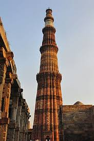
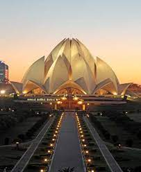

India Gate
I visited India Gate which was located in Delhi. There were names of soliders on the walls of gate. Image result for india gate India Gate, official name Delhi Memorial, originally called All-India War Memorial, monumental sandstone arch in New Delhi, dedicated to the troops of British India who died in wars fought between 1914 and 1919.

Qutub Minar
Qutub Minar is one of the highest minarets in India with a height of 73 metres. It is a UNESCO World Heritage Site and the tallest brick minaret in the world. This 12th-century minaret is considered as the earliest Islamic structure in India with both Arabic and Brahmi inscriptions.
RedFort
Image result for redfort It is a monument of national significance;
every year on India's Independence Day (15 August), the Prime Minister
of India hoists the country's flag at the Red Fort and delivers a
nationally broadcast speech from its ramparts.

Lotus Temple
Q Image result for lotus temple It is known for its beautiful flower-like architecture and marvelous ambiance that make it a popular tourist attraction for people of all faiths. The Bahai Lotus Temple is one of the world's most beautiful religious buildings and a must-visit when in Delhi.
